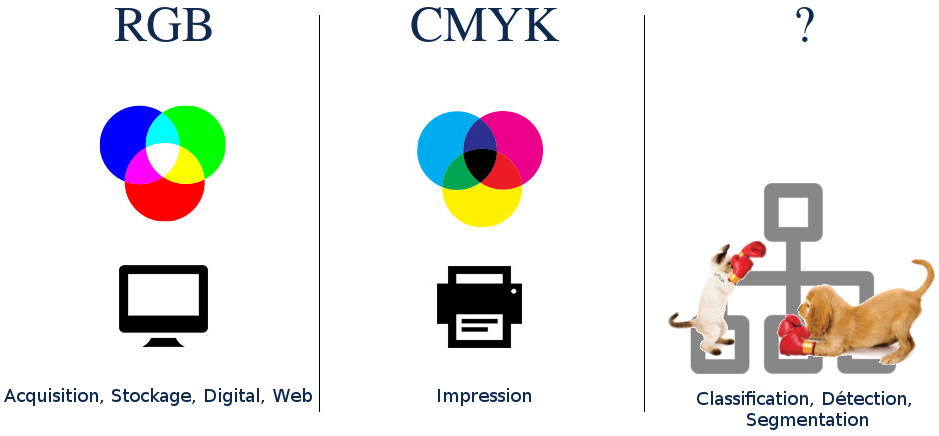
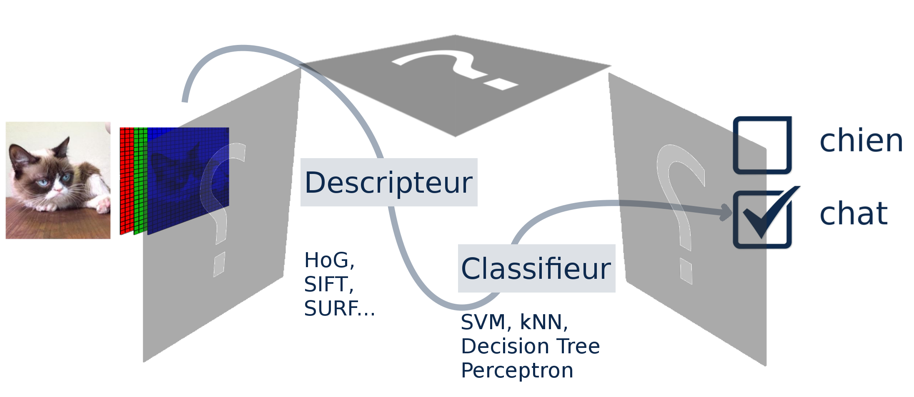
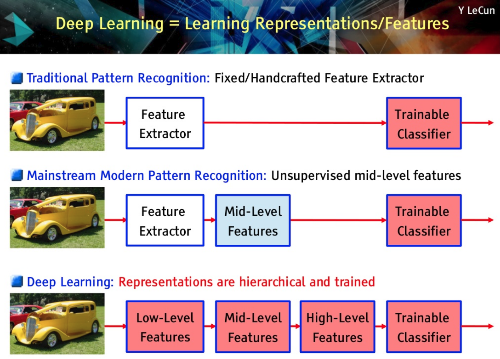

Problème dans l'utilisation de Impress.js, est-ce que le navigateur est correct et que les fichiers sont disponibles ?
Reconnaissance visuelle robuste par réseaux de neurones dans des scénarios d’exploration robotique.
Détecte-moi si tu peux !
Soutenance de thèse de
Joris GUERRY
pour l'obtention du grade de Docteur en Informatique de l'Université Paris-Saclay
David Filliat
Bertrand Le Saux
Directeur de thèse
Encadrant
La reconnaissance visuelle,
quelques exemples
Pour un humain, une image c'est...
un environnement,
un sujet,
un point de vue,
un instant figé,
une histoire,
des souvenirs,
En fait un humain ne reconnait pas un objet, mais il reconnait un concept.
Plus qu'un objet, c'est un concept.
L'humain reconnaît des concepts.
Par exemples ici nous avons 3 styles de chaises différentes.
... mais pour les robots
Tortoise (Grey Walter - 1950)
Asimo (Honda - 2000)
Handle (Boston Dynamics - 2016)
Comment faire le lien entre les concepts des hommes et l'informatique embarquée des robots ? C'est là qu'intervient ce qu'on appelle la Vision par ordinateur ou Computer Vision.
Computer vision is concerned with [...] automatic visual understanding.
The British Machine Vision Association and Society for Pattern Recognition
La vision par ordinateur, en utilisant un anglicisme très pratique, c'est l'art de sémantiser des images de façon automatique, c'est à dire donner du sens aux images sans l'intervention de l'homme.
Transition : Alors qu'est-ce que ça veut dire donner du sens au image ? Et bien tout d'abords intéressons nous rapidement à qu'est-ce que c'est qu'une image ?
Qu'est-ce qu'une image ?
Qu'est-ce qu'une image ?
$Image\in[0:255]^{W \cdot H \cdot D}$
Exemple : Image de Kinect (640, 480, 3) $\rightarrow$ $256^{640 \cdot 480 \cdot 3} = $ $ 10^{2219434}$ images potentielles Nombre d'atomes dans l'univers
$ \approx 10^{80}$
Ce que l'on peut voir ici c'est la représentation d'une image sous sa forme RGB. Elle est utile car nos yeux sont sensibles à ces trois couleurs et ainsi nous avons directement accès à l'information nécessaire pour générer cette image sur un écran.
Un espace de représentation pour une tâche donnée

Mais certaines imprimantes ne fonctionnent pas avec la représentation RGB mais la représentation CYMK / CMJN (cyan, magenta, jaune, noir) (en anglais CMYK, cyan, magenta, yellow, key). Tout est question d'objectif. Quel est notre objectif ? Et quelle
est la représentation la plus adéquate ? ALors en effet, si l'objectif est de reproduire une image visible par l'homme, la représentation RGB est idéale, mais s'il s'agit de faire automatiquement la différence entre un chien et chat (automatiquement
au sens algorithmique) c'est une autre histoire. En effet, on attaque ici la problématique de partitionnement de notre espace de données. Pourquoi ne pas utiliser la représentation RGB également ? Et bien en fait, faire de la classification c'est
mesurer l'appartenance à un groupe. Le problème avec la représentation RGB c'est que chaque pixel correspond à une dimension.
Les tâches de la vision par ordinateur
Alors, il existe d'autres tâches de la vision par ordinateur non montrées ici. comme des tâches géométriques mais nous nous sommes intéressés aux taches sémantiques.
Les tâches de la vision par ordinateur
"YOLO9000: better, faster, stronger." (2016)
Joseph Redmon and Ali Farhadi
"Segnet: A deep convolutional encoder-decoder architecture for image segmentation."
(2015)
Badrinarayanan, Kendall and Cipolla
la brique de base c'est la classification. que ce soit en détection ou en segmentation, il arrive toujours le moment où on doit prendre une décision sur la classe de l'entité considérée. C'est pourquoi je vous propose de réfléchir plus attentivement à
la tâche de classification.
La classification
La tâche de classification consiste à partir d'une image en représentation RGB et d'arriver à l'attribution d'une classe. Dit autrement, on part d'un espace en grande dimension que sont l'espace des images pour arriver à estimer un vecteur qui mesure
l'appartenance aux N classes. DOnc on arrive dans un espace en N dimension.
Autrement dit on cherche à partitionner l'espace RGB en N classes. Or pour faire des partitions on mesure les similarités entre les vecteurs d'un espace et le problème c'est que en grande dimension la notion de similarité, autrement dit de distance, perd
de sa valeur.
En effet, chaque dimension est une occasion de plus pour deux vecteurs de s'éloigner (exemple des villes). --> Du coup on cherche à diminuer la taille de l'espace de représentation avant de commencer a faire du partitionnement.

Descripteurs et classification

L'apprentissage profond
Présenter rapidement les CNNs. Utiliser l'idée de changement d'espace de représentation pour expliquer le rôle de chaque couche.
L'apprentissage profond
http://scs.ryerson.ca/~aharley/vis/conv/flat.html
Adam Harley
Reconnaissance visuelle robuste par réseaux de neurones dans des scénarios d’exploration robotique.
Détecte-moi si tu peux !
Sélection d'algorithmes de classification
Approche multimodale pour la détection
Approche multivue pour la segmentation
Reconnaissance visuelle robuste par réseaux de neurones dans des scénarios d’exploration robotique.
Détecte-moi si tu peux !
Sélection d'algorithmes de classification
Approche multimodale pour la détection
Approche multivue pour la segmentation
nouvelle planche vide
nouvelle planche vide
nouvelle planche vide
Conclusion 2D
Reconnaissance visuelle robuste par réseaux de neurones dans des scénarios d’exploration robotique.
Détecte-moi si tu peux !
Sélection d'algorithmes de classification
Approche multimodale pour la détection
Approche multivue pour la segmentation
nouvelle planche vide
nouvelle planche vide
nouvelle planche vide
Conclusion 2.5D
Reconnaissance visuelle robuste par réseaux de neurones dans des scénarios d’exploration robotique.
Détecte-moi si tu peux !
Sélection d'algorithmes de classification
Approche multimodale pour la détection
Approche multivue pour la segmentation
nouvelle planche vide
nouvelle planche vide
nouvelle planche vide
Conclusion 3D
Reconnaissance visuelle robuste par réseaux de neurones dans des scénarios d’exploration robotique.